Brand
Logo concepts
Five suggestions for a personal mark, all built from Vici's geometry. The starting point is the mark on the current personal website: a V drawn as a path through data points that starts at a solid node and ends at an open ring, the goal. Each concept keeps a different part of that idea and translates it into hexagons.
1 · Vertex Recommended
The idea: the closest evolution of the existing mark. The V is still a path through data: a solid start node, a checkpoint at the apex, and a pastel goal that the path hasn't quite reached yet. Every node is now a hexagon, and both arms run at exactly 60°, the angle of the honeycomb lattice. The nodes are turned so that the arms meet their faces at right angles, which makes the joints look engineered rather than glued on.
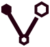
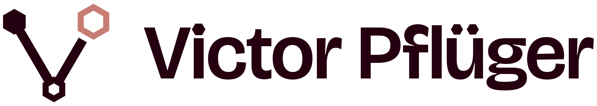
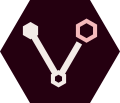
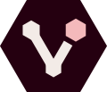
Why it's the recommendation: it carries over the story people may already know from the website, it reads clearly as a V, and it works from 16 px to a billboard. It's also the most personal of the five: a data path that ends in a goal fits a consultant who turns data into decisions.
2 · Facet
The idea: a hexagon split into three rhombi becomes a cube, the building block of data (think of the OLAP cube). The two lower faces in merlot meet in a V-shaped notch under the pastel top face. It's architectural and calm, and it suits slides and documents.
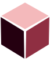
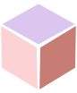
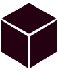
Trade-off: cubes are a common motif, so the V is subtle. Choose it if structure matters more to you than the letter.
3 · Honeycomb
The idea: five honeycomb cells form a V. Their colour runs from the base colour to pastel, so the website's journey from a solid start node to a soft goal becomes a gradient through the cells.
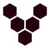
Trade-off: the most playful option, and the one that shows the pastel palette best. Below 24 px the five cells start to blur together.
4 · Monogram
The idea: V and P drawn as one continuous line. The right arm of the V rises at 60° and becomes the stem of the P, and the P's bowl is half a hexagon with a pastel counter. It's typographic, bold and unmistakably yours.
Trade-off: it works best large: on a title slide, a business card or a profile picture. The slanted P needs a moment to read.
5 · Wordmark
The idea: no symbol, just the name, set in Bricolage Grotesque Semibold at its largest optical size. The dot of the i and both dots of the ü are hexagons. It's the quietest option and pairs with any of the symbols above.
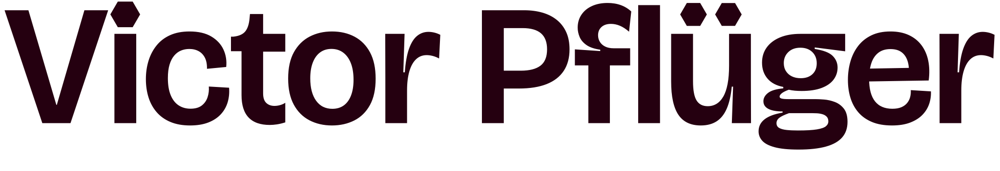
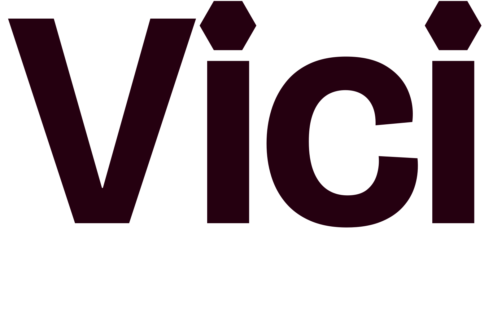
The wordmarks are outlined from the font by scripts/brand/wordmark.py, so they look identical everywhere and need no installed fonts.
Comparison
| Concept | Reads as V | Small sizes | Link to today’s mark | Character |
|---|---|---|---|---|
| Vertex | Good (favicon cut) | Direct evolution | Precise, personal | |
| Facet | Very good | Loose | Architectural, calm | |
| Honeycomb | Fair | The journey as a gradient | Playful, colourful | |
| Monogram | Fair | The V, plus your initial | Bold, typographic | |
| Wordmark | — | Not for icons | Hexagon dots only | Quiet, editorial |
Usage
- Clear space: keep at least the height of the goal node free on every side of the symbol, and twice that around lockups.
- Minimum size: the symbol at 24 px height, the favicon cut from 16 px, the lockup at 120 px width.
- Colour: use the colour version on linen or white, the dark version on merlot or photography, and mono when only one ink is available (stamps, embossing, single-colour print).
- Don't rotate, stretch, outline or add shadows, don't swap the hexagons back to circles, and don't put the colour version on mid-tone backgrounds where the goal node disappears.
Choosing
The documentation uses Vertex in its header and favicon for now. All five concepts are generated from geometry in scripts/lib/logos.mjs, so proportions, colours and stroke weights of the chosen one are easy to fine-tune.